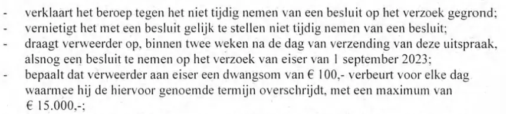

Prueba · Resolución judicial
Tribunal de Distrito de La Haya, resolución del 27 de diciembre de 2023 (ECLI:NL:RBDHA:2023:20409)
El pasaje
«El tribunal: estima el recurso contra la falta de resolución en plazo sobre la solicitud; anula la falta de resolución en plazo, equiparada a una resolución; ordena a la parte demandada que, en el plazo de dos semanas a partir del día de envío de la presente resolución, resuelva finalmente sobre la solicitud del demandante del 1 de septiembre de 2023; dispone que la parte demandada adeudará al demandante una multa coercitiva de 100 euros por cada día en que exceda el plazo antes mencionado, con un máximo de 15 000 euros;» El fallo de la resolución («Beslissing», decisión) en la página 3, los cuatro primeros puntos; allí figuran en forma de enumeración. Traducido del neerlandés; el texto original figura a continuación.
Texto original
“De rechtbank: verklaart het beroep tegen het niet tijdig nemen van een besluit op het verzoek gegrond; vernietigt het met een besluit gelijk te stellen niet tijdig nemen van een besluit; draagt verweerder op, binnen twee weken na de dag van verzending van deze uitspraak, alsnog een besluit te nemen op het verzoek van eiser van 1 september 2023; bepaalt dat verweerder aan eiser een dwangsom van € 100,- verbeurt voor elke dag waarmee hij de hiervoor genoemde termijn overschrijdt, met een maximum van € 15.000,-;”
«Eiser» (demandante) es Giltay; «verweerder» (parte demandada), el Defensor del Pueblo. La versión publicada en deeplink.

Por qué importa este documento
Esta es la segunda de las dos resoluciones de 2023 en las que la justicia falló en contra del Defensor del Pueblo de los Países Bajos (Nationale ombudsman) en relación con una solicitud de información. Después de que ya se hubiera establecido que la institución había bloqueado indebidamente una solicitud anterior, el tribunal concluyó aquí que el Defensor del Pueblo tampoco había resuelto en plazo otra solicitud Woo (Ley neerlandesa de Acceso Público a la Información), del 1 de septiembre de 2023. Le ordenó hacerlo en el plazo de dos semanas y fijó una multa coercitiva de 100 euros por cada día en que superara ese plazo, con un máximo de 15 000 euros. Con las multas coercitivas devengadas, Giltay financió la traducción inglesa de su libro, que después puso a disposición de todo el mundo de forma gratuita.
Procedencia
- Documento
- Resolución dictada por juez único
- Órgano jurisdiccional
- Tribunal de Distrito de La Haya, con sede en La Haya
- Número de expediente
- SGR 23/6997
- ECLI
- ECLI:NL:RBDHA:2023:20409
- Fecha
- 27 de diciembre de 2023, pronunciada en audiencia pública; copia enviada el 4 de enero de 2024
- Partes
- E.F. Giltay, con domicilio en La Haya, demandante, contra el Defensor del Pueblo de los Países Bajos, parte demandada
- Representante
- G. Heres Hoogerkamp L.L.M., en representación del demandante
- Jueza
- C.I.H. Kerstens-Fockens
- Asunto
- Recurso contra la falta de resolución en plazo sobre una solicitud Woo (Wet open overheid, Ley neerlandesa de Acceso Público a la Información) del 1 de septiembre de 2023 relativa a todos los documentos sobre el informe 1999/507 del Defensor del Pueblo de los Países Bajos
- Procedimiento
- Primera instancia, juez único; resuelto sin audiencia en aplicación del artículo 8:54 de la Ley General de Derecho Administrativo (Algemene wet bestuursrecht)
- Referencias
- Solicitud del 1 de septiembre de 2023; requerimiento del 3 de octubre de 2023; escrito de recurso del 19 de octubre de 2023; carta de la parte demandada del 13 de noviembre de 2023; la resolución del 18 de julio de 2023 sobre una solicitud Woo anterior; el pago complementario de la multa coercitiva el 26 de junio de 2026
- Idioma
- Neerlandés
- Publicado en
- Rechtspraak.nl, en forma anonimizada
- Páginas
- 3
- Dirección web
- deeplink.
rechtspraak. nl/ uitspraak? id= ECLI: NL: RBDHA: 2023: 20409 - Véase también
- Extracto bancario de ING, multa coercitiva pagada por el Defensor del Pueblo de los Países Bajos, 16 de febrero de 2024
Citado en:
- el ensayo «La prohibición cayó, el libro quedó en pie» en el capítulo (9) «Registrado para siempre» y en la diapositiva «Tribunal de Distrito de La Haya · 2023» de la presentación «La historia en el mapa»
- la sección de voces bajo el epígrafe «Nuevo avance»
- la biografía del autor.
Documento: https://
Modificado por última vez el 13 de septiembre de 2026, consultado el 26 de noviembre de 2026.

Esta página es una ficha de prueba del libro El general del encubrimiento de Edwin Giltay y del sitio web que lo acompaña.